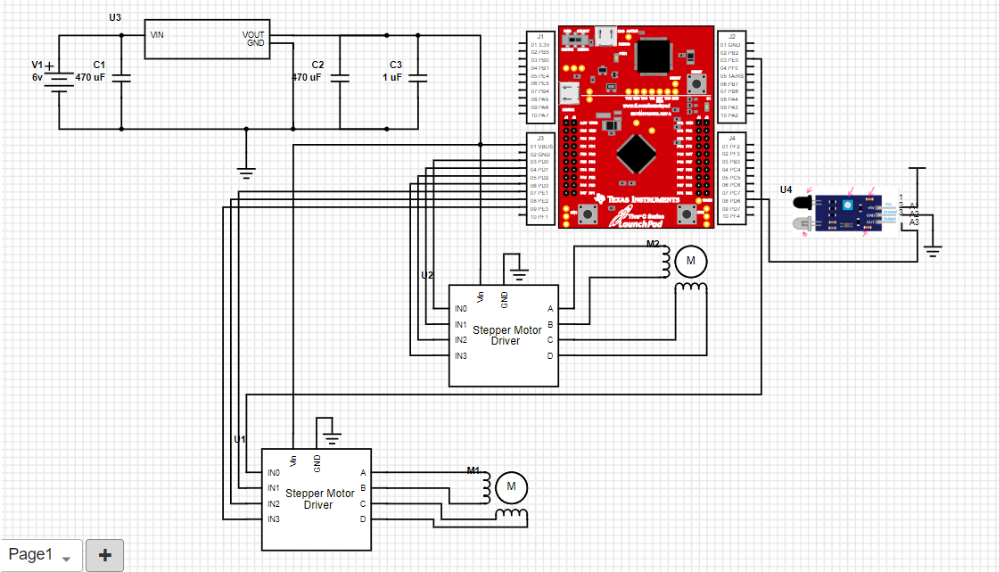
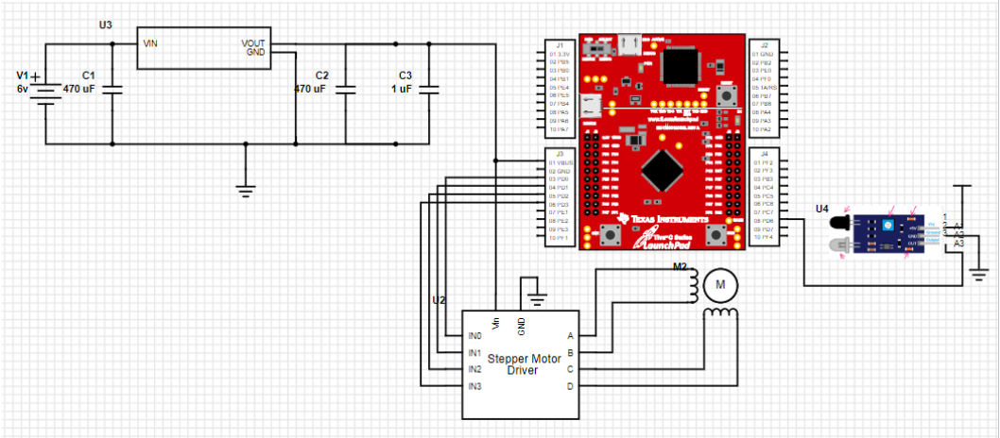

Hardware Projects
A Smart House with a Stepper Motor Car
Full Report VideoIntrodction
This was a group project that integrated a smart house and a smart car, both equipped with sensors to enable seamless interaction. The car operates in two modes: entering and leaving. In the entering mode, an infrared sensor detects objects ahead, ensuring the car doesn't collide with obstacles. The car then navigates towards the house. The house, equipped with its own infrared sensor, detects when the car is waiting for the garage to open. Upon detection, a stepper motor opens the garage door, allowing the car to enter. Conversely, in the leaving mode, the car exits the garage, turns, and leaves.
Software Design
Two TM4C microcontrollers were programmed to manage the car and the smart house. The car's program utilized an FSM to control movement and interrupts for the onboard switches and infrared sensor. When the sensor detected an object, the car stopped until the path was clear. The house's program mirrored the car’s control logic, with added LED indicators to signal the garage door's status. The house system activated upon a switch interrupt and used an infrared sensor to detect the car, triggering the garage door mechanism.
Hardware Design
The hardware setup involved configuring the microcontroller ports, integrating the stepper motor with a power supply and voltage regulator, and setting up infrared sensors for object detection. Ensuring the motor ran off a stable 5V supply, rather than directly from the microcontroller, was essential for safety and reliability.
Car Schematic
House Schematic
Conclusion
Several challenges were encountered and overcome during this project. Initializing interrupts for switches and LEDs on predefined pins on port F required careful attention to input/output definitions. The interrupts were incorrectly triggered by LED changes instead of button presses, which was resolved by checking the GPIO_PORTF_RIS_R register in the port F handler. Another challenge was synchronizing the LED blinking rate with the stepper motor operation. This was addressed by using a count variable in the systick ISR to divide the motor's frequency, achieving the desired LED blinking rate. This project successfully demonstrated the integration of various microcontroller and sensor concepts to create a functional smart house and car system.